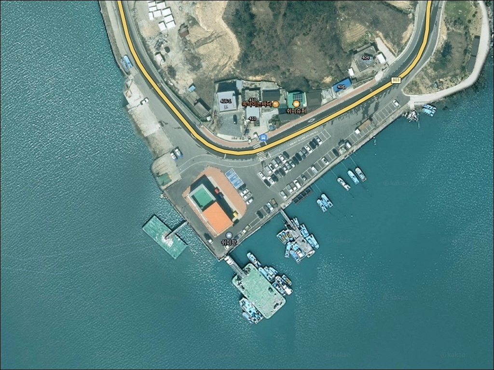
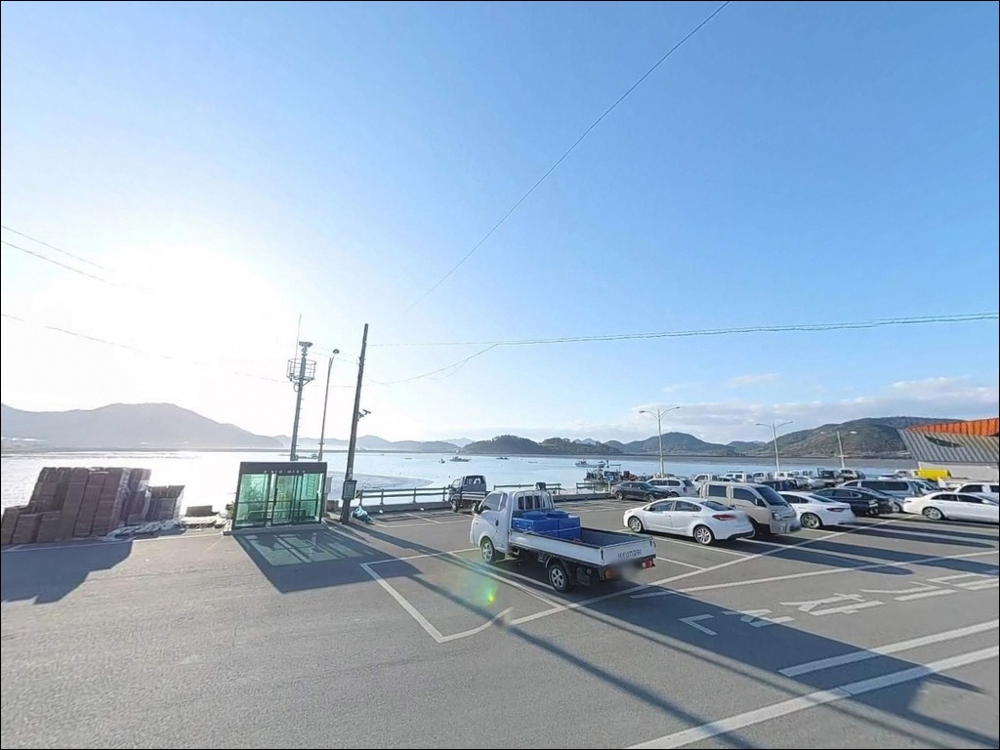
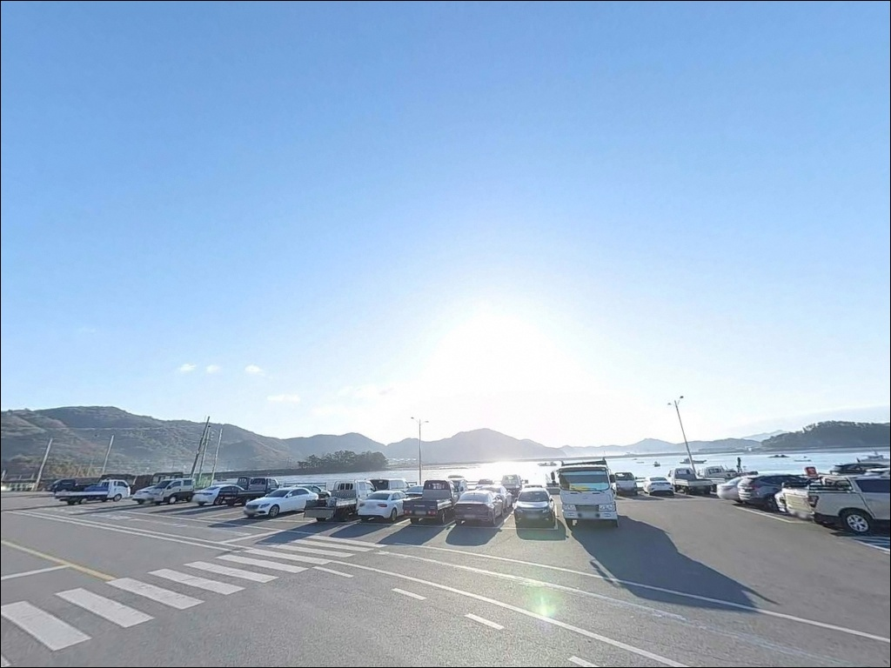
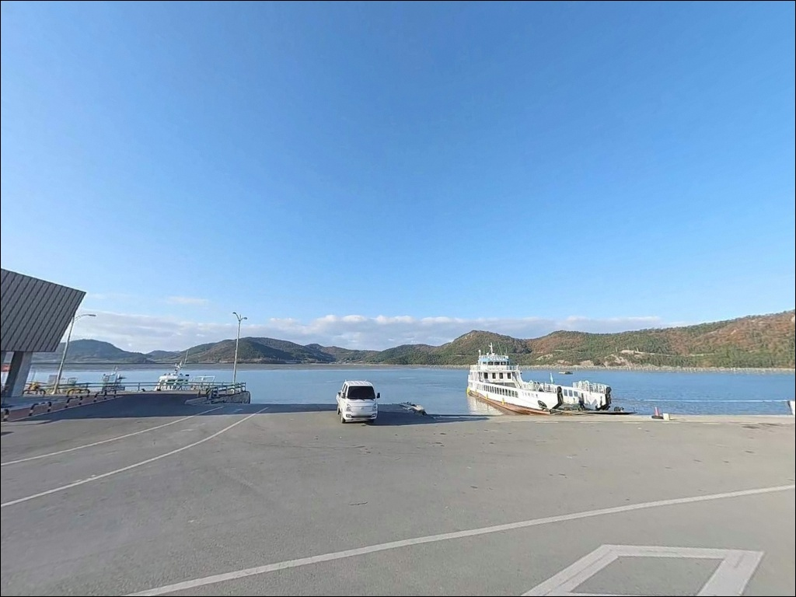
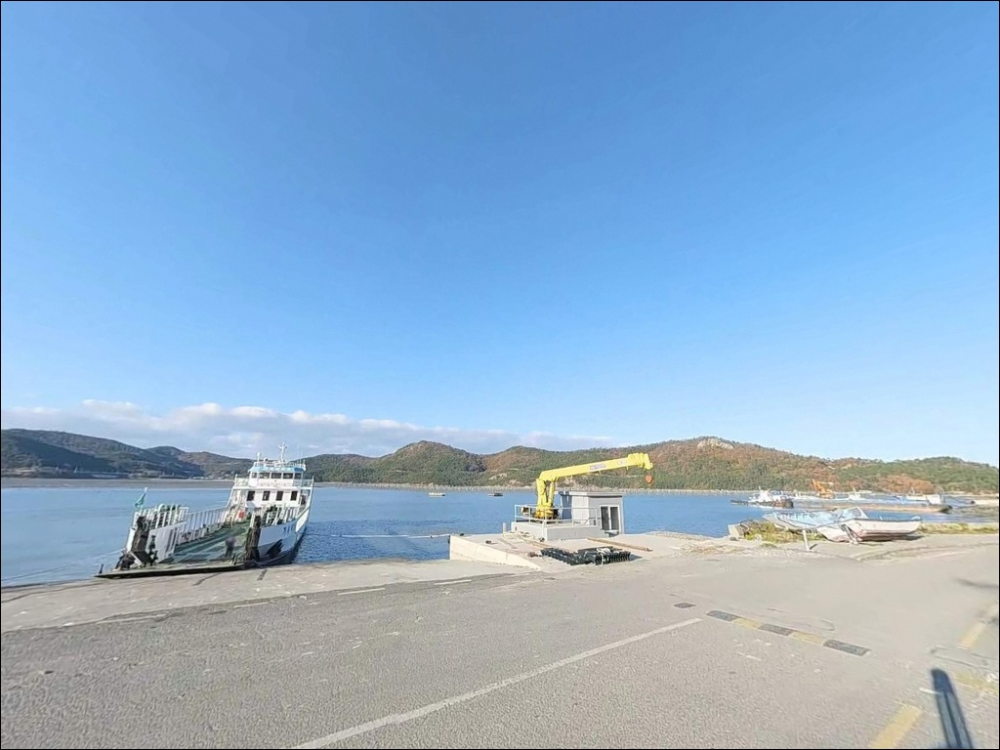
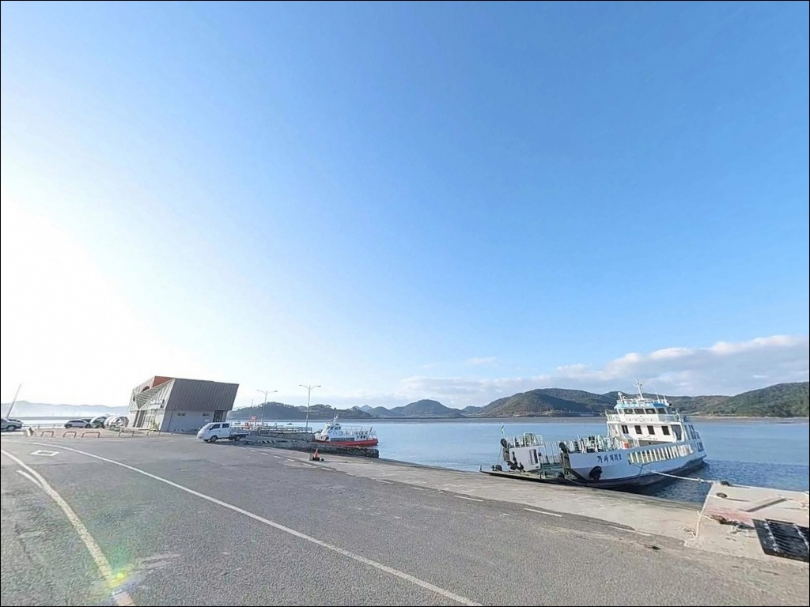
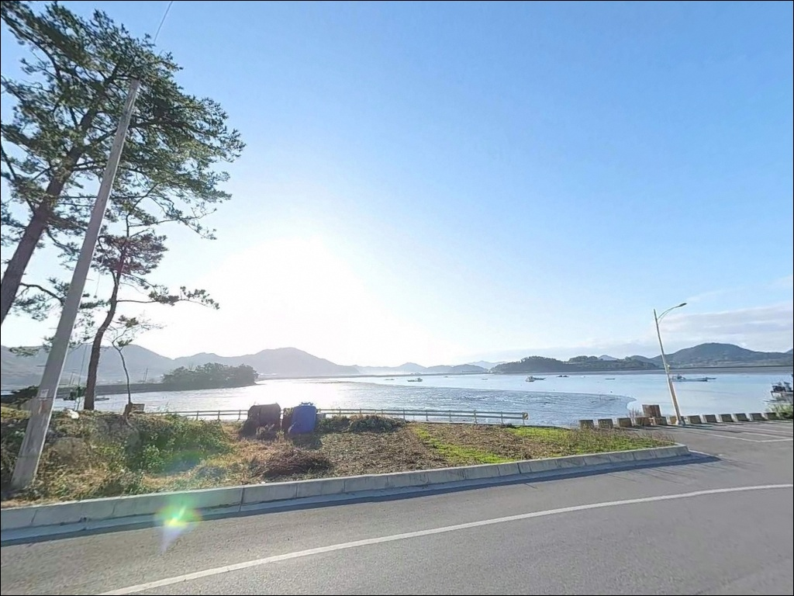
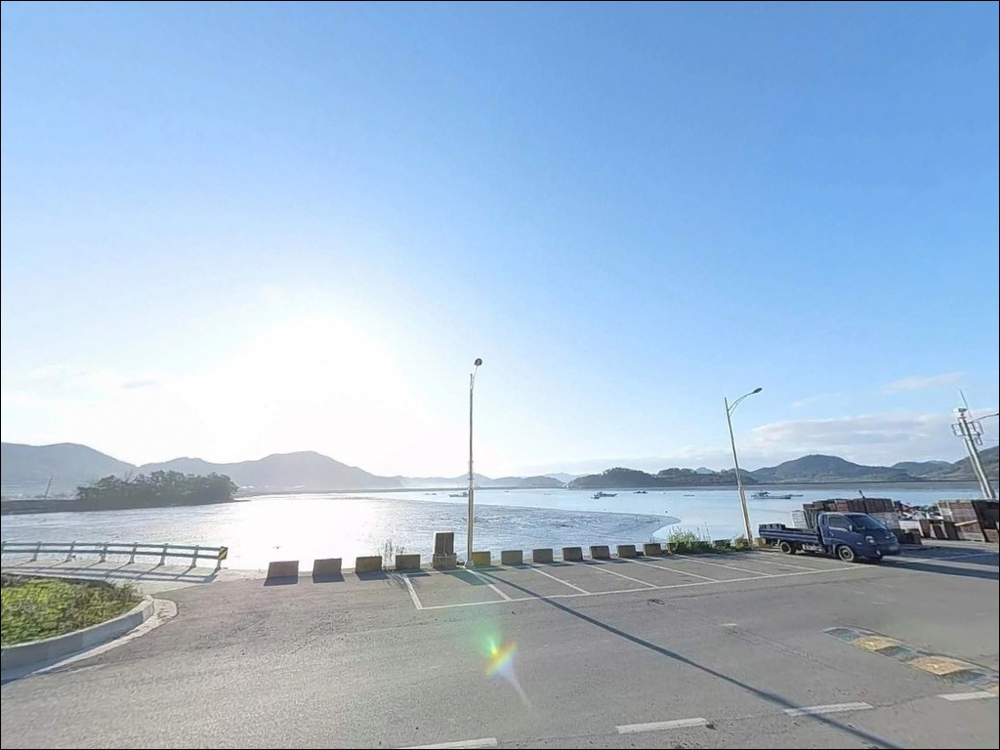

쉬미항(쉬미선착장), 진도 전남 진도군 풍경이 깊은 여운을 남기는 차박, 낚시 해안
이 페이지에는 광고(제휴 링크 포함)가 있으며, 광고 링크를 통해 구매하면 운영자가 판매 수익 또는 수수료를 받을 수 있습니다. 포인트 사진: 카카오맵 스카이뷰·로드뷰. 이 페이지의 지도·사진 이미지는 카카오맵의 실제 서비스 이미지와 다를 수 있습니다.


포인트 안내
쉬미항(쉬미선착장)
전라남도 진도군 진도읍 산월리 631-8
명량수도 영향권인 진도 해역에서
물때 계산 없이 방파제 끝단에 자리를 펼치면,
조류가 너무 강해 어떤 채비를 써도
흘러버리는 상황을 먼저 맞닥뜨리게 됩니다.
사리 전후 강한 조류 시간대에 입질을 기다리는 것은
시간 낭비로 끝나는 경우가 많습니다.
이 글은 쉬미항의 지형 구조와
들물 타이밍 판단 기준,
낚시 스타일별 공략 조건에 집중합니다.
특정 어종 조황 단정이나 시설 운영 보장은
이 글의 범위에 포함되지 않습니다.

1. 진입 동선과 포인트 접근성
진도읍에서 801번 군도를 따라
서북쪽으로 이동하면 산월리 쉬미항에 닿습니다.
2021년 진도군 현장 점검에서
진입로 개선이 이루어진 것이 확인되어
포장도로로 연결된 접근 경로입니다.
차량 진입 자체에 큰 어려움은 없는 편이며,
가사도 여객선이 오가는 규모 있는 항구로
공동주차장 조성도 이루어져 있습니다.
소형차에서 중형차 수준까지는
무난하게 진입하고 회차할 수 있는 구조입니다.
대형 SUV나 캠핑카라면
회차 공간 여유를 미리 확인해두는 편이 좋습니다.
여객선 출입항 시간대에는 터미널 인근 동선이 좁아지므로
이른 아침 또는 야간 입장이 주차 공간 면에서 유리합니다.
주차는 여객선 터미널 인근 공터가 기본 후보입니다.
어선 계류 구역과 선착장 내부
어업 작업 공간은 피해서 자리를 잡는 것이
기본 매너입니다.

2. 차박 환경과 야간 체류 여건
쉬미항은 여객선이 오가는 항구로
낮 시간대 유동인구가 있는 편입니다.
야간에는 항만 시설 가로등이 기본 조명을 만들어주어
완전한 암흑 환경은 아닙니다.
조용하게 하룻밤 머무는 용도로는
낚시를 마친 뒤 야간 대기 수준의 활용이 현실적입니다.
항이 서쪽으로 개방된 구조라
서풍 계열 바람이 강할 때는
체류 여건이 불편해질 수 있습니다.
출발 전 기상청 해상 예보에서
서풍 방향 풍속을 반드시 확인해야 하는 이유입니다.
물양장 내항 쪽은 파도 영향이 적고
수면이 잔잔한 편이라,
바람이 강하지 않은 날 이 구간에서 머무는 방식이
차박 체류에 현실적으로 맞는 자리입니다.


3. 주변 편의시설 및 인프라 현황
쉬미항 반경 3km 이내에서
확정된 편의시설 정보는 현재 확인되지 않습니다.
식수·얼음·낚시 소품·연료는
진도읍 출발 전에 모두 갖추는 것이
기본입니다.
진도읍 시가지에는 마트·편의점·주유소·약국이
밀집해 있어 보급 기지로 활용하기 좋습니다.
쉬미항에서 진도읍까지는 801번 군도를 따라
차량으로 이동하면 닿을 수 있는 거리입니다.
응급 상황 발생 시에도
진도군청 인근 의료기관이 반경 10km 내에 있어
접근이 가능한 권역입니다.

4. 방문 전 반드시 챙겨야 할 준비사항
방문 전 가장 먼저 확인할 것은 물때입니다.
쉬미항은 바다타임에 코드 477번으로 등록되어 있어
이 코드로 물때표를 직접 확인할 수 있습니다.
명량수도 조류 영향권이라
사리 전후 조류가 세지는 시간대에는
채비 컨트롤이 어려워지며,
조금 전후나 들물 초반 타이밍이
입질 활성도 면에서 유리한 편입니다.
방파제 끝단과 갯바위 구간은
파도와 미끄럼 위험이 있는 구간입니다.
구명조끼는 방파제 진입 시 반드시 착용하고,
미끄럼 방지 신발과 헤드랜턴은
야간 낚시 시 기본 장비입니다.
선박 동선을 막지 않는 자리 선택도
여객선 운항 항에서는 반드시 지켜야 할 매너입니다.
진도 해역 특성상 암반·여밭 지형에서
밑걸림으로 인한 채비 손실이 잦은 편입니다.
여분 채비를 넉넉히 준비하고 출발하는 것이
현장 낭비를 줄이는 방법입니다.
최신 조황은 출발 전
쉬미항 낚시 또는 진도 방파제 감성돔 키워드로
미리 검색해보시기 바랍니다.

5. 방파제 방향 따라 입질 조건이 달라지는 이유
쉬미항은 방파제(계획 연장 120m)와
물양장(계획 연장 150m)이 결합된 구조입니다.
방파제는 서쪽 외해 방향으로 뻗은 형태로,
끝단 외항 쪽은 조류를 직접 받는 구간입니다.
내항 물양장 쪽은 수면이 잔잔하고
바닥이 모래·펄 혼합 지형으로
이루어진 편입니다.
외항 방향 방파제 끝단 근처는
수심이 급변하는 구간이 형성됩니다.
조류가 흐를 때 어종이 회유하는 길목이 만들어지며,
들물 타이밍에 입질 활성도가 높아지는 구조입니다.
원투낚시와 찌낚시 모두
이 구간을 기준으로 자리를 잡는 편이
효율적입니다.
원투낚시란 무게 있는 봉돌을 달아
채비를 원거리로 캐스팅한 뒤
바닥 어종을 노리는 방파제·선착장 낚시 방식입니다.
내항 물양장 쪽에서는 도다리·붕장어를,
방파제 외항 방향에서는
조류가 흐를 때 감성돔과 숭어 접근을
기대해볼 수 있는 구조입니다.
쉬미항 방파제 끝단은 명량수도 조류의 영향을 직접 받아
들물 타이밍에 감성돔 찌낚시 조과가 올라오는 구조입니다.


6. 포인트에 어울리는 낚시 스타일
원투낚시는 이 포인트 구조에 가장 잘 맞는 스타일입니다.
물양장 쪽 모래·펄 바닥에서는
도다리와 붕장어를 기대해볼 수 있습니다.
봄철 도다리 시즌과 여름철 붕장어 시즌에는
채비를 멀리 보낸 뒤 기다리는 방식이
물양장 구조와 잘 맞는 접근법입니다.
감성돔 찌낚시도 진도권 방파제의
대표적인 낚시 방식입니다.
물때란 하루 두 번 반복되는
밀물과 썰물의 시간 흐름을 나타내는 기준으로,
출조 전 반드시 확인해야 하는 낚시의 기본 조건입니다.
릴찌낚시 채비로 방파제 끝단 외항 쪽에서
들물 타이밍을 집중 공략하는 방식이
조과 면에서 효과적인 접근입니다.
에깅도 시도해볼 수 있는 방식입니다.
방파제 주변 수중 암반 지형이 있는 구간에서
갑오징어 에깅 포인트가 형성됩니다.
가을 시즌에 에기 채비를
방파제 측면 암반 경계선을 따라 탐색하는 방식이
진도권 해역 패턴에 맞습니다.
볼락 라이트게임도 야간 방파제 주변 암반대에서
소형 지그헤드 채비로 성립하는 스타일입니다.

7. 대안 포인트와 플랜 B 동선
쉬미항 조류가 너무 강하거나
여객선 운항으로 주차 여건이 여의치 않을 때
가장 먼저 이동할 수 있는 대안이
군내방조제입니다.
쉬미항에서 북쪽 방향으로 이동 가능한 이 방조제는
들물 타임 원투낚시와 숭어 낚시로 알려진 포인트입니다.
방조제 구조상 주차와 낚시 자리 확보가
쉬미항보다 넓은 편이라
플랜 B로 효율적인 선택입니다.
소포방조제도 진도권 대안 포인트 중 하나입니다.
들물 타이밍 원투낚시가 성립하는 구조로,
쉬미항이 기대에 미치지 못할 때
같은 방식의 낚시를 이어서 할 수 있는 동선입니다.
거제리방파제도 반경 내 대안 포인트로,
찌낚시와 루어낚시를 이어서 운영할 수 있는 곳입니다.
진도 고군면의 용호항은
갑오징어 에깅과 감성돔 원투 포인트로
낚시 전문지에 기록된 곳입니다.
보전리선착장 역시 우럭·감성돔 포인트로
소개된 바 있어 에깅 시즌에
묶어서 돌아보기 좋은 동선으로 활용할 수 있습니다.

들물 타이밍 맞추면
쉬미항은 진도 북부권 낚시 기지가 됩니다
감성돔 찌낚시나 원투낚시를 즐기는 낚시인이라면
쉬미항의 방파제·물양장 복합 구조는
자리 선택폭이 넓은 편입니다.
명량수도 영향권의 강한 조류를 먼저 이해하고
들물 타이밍을 계산해 입장한다면
기대에 맞는 출조가 됩니다.
반면 물때 계산 없이 사리 전후에 도착하거나
여객선 운항 시간대와 겹쳐
주차 공간이 부족해진 상황에서 시작하면
처음부터 리듬이 맞지 않습니다.
바다타임 코드 477번으로 물때를 사전 확인하고,
진도읍에서 보급을 마친 뒤 이동하는 것이
쉬미항 방문의 기본 동선입니다.
조용한 어촌 항구에서 들물이 들어오는
방파제 끝단에 찌를 세우고
하룻밤 머무는 차박 출조라면,
기상과 물때만 맞춰 간다면
진도 해역 특유의 조류 낚시를 경험할 수 있는 포인트입니다.